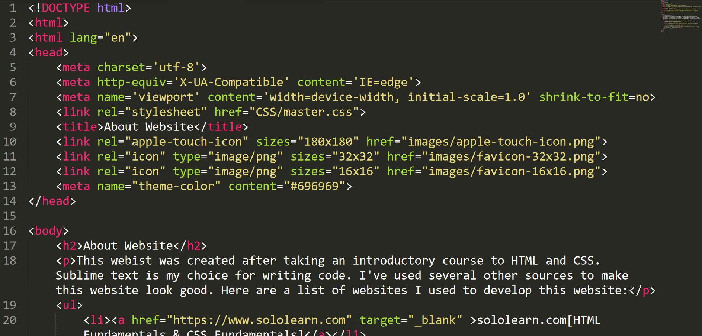

← Back to Portfolio
About This Website

This portfolio started as a summer project in 2020 after taking an introductory HTML course. It has since evolved into a modern showcase of my work as a software engineer — built with semantic HTML, custom CSS, and hosted for free on GitHub Pages.
Resources and inspiration used along the way:
- Sololearn — HTML Fundamentals
- HTML Color Codes — Color reference
- CSS-Tricks — Font stacks
- freeCodeCamp — Portfolio inspiration
- W3Schools — CSS tutorials
- YouTube — Hosting on GitHub Pages
The source code is available on GitHub. Feel free to explore, fork, or reach out with feedback.